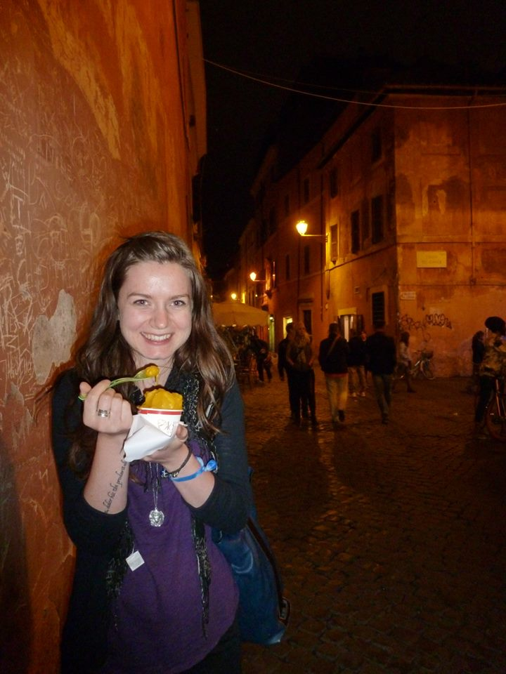

Much Ado about Kat

Where am I from?
Hometown is tricky to narrow down... Calgary, if you go by most cumulative years.
Where was I before RED?
I studied Roman Archaeology at UVic and UBC and finished my MA if Fall 2015. Since then, I've been working at Aveda until I can figure out how to make Roman archaeology work in Canada.
Then why am I here?
Believe it or not, most archaeologists, Classicists, and academics in general are not that great with technology.
I want to help them build sites for their research and various projects, to give them an online platform for their work.
Digital Humanities is booming and a lot of them need to be brought into the 21st century, technology-wise.
I already have some experience working with websites and archaeology, I'm the media director for a digitization project
that I worked on at UBC, called From Stone to Screen.
Fun fact!
I know 5 languages.
- English
- French
- Ancient Greek
- Latin
- Italian
But since two of the languages are dead, really only 60% of my lanaguage skills are useful in everyday life.
Archaeology is a minor obsession.
My best travel experience has to be when I did my first season of excavation in Italy.
I spent a week travelling around Rome and Cinque Terre with an old friend,
then spent the rest of the summer learning Umbria and taking weekend expeditions to various parts of the country.
It was 2 months of good food, Roman ruins, amazing friends, and practicing my Italian.
Italy has started to feel like home and the exploration of that summer was incredibly fun.
I also have way too many pictures of me hugging columns and/or eating gelato.